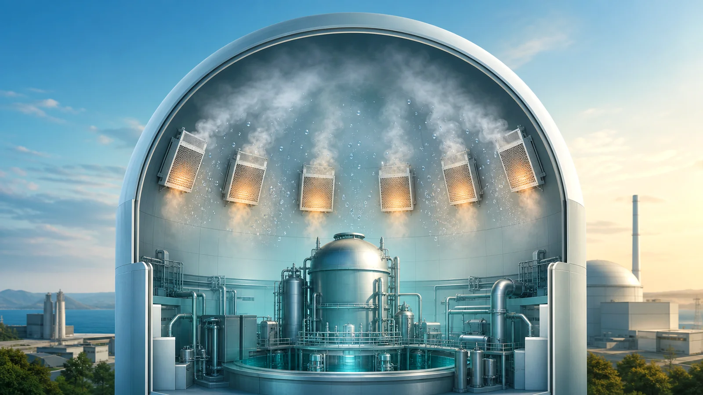
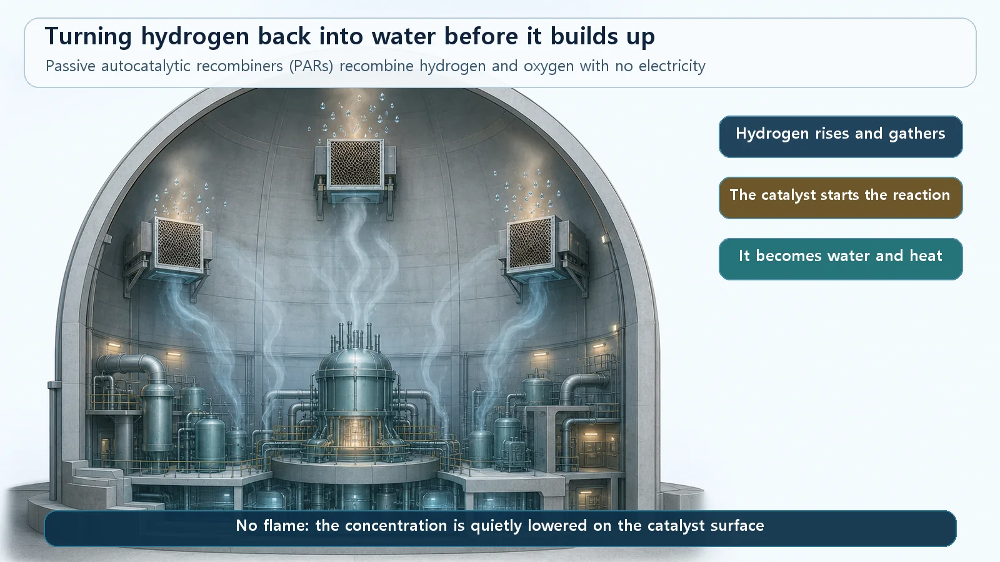
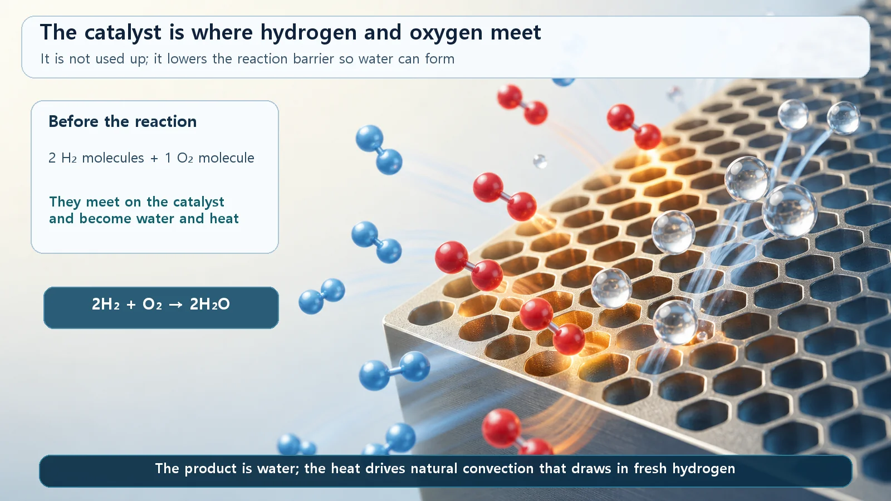

Reactor Types & Plant Systems · 195
Quietly Turning an Invisible Gatecrasher Back Into Water — The Hydrogen Control System
Catalyst plates that turn hydrogen and oxygen back into water with no power and no flame, plus igniters and nitrogen inerting as alternative routes.

The hydrogen control system removes hydrogen that can build up inside the containment during a severe accident, before it reaches a dangerous concentration. Its main tool, the passive autocatalytic recombiner (PAR), turns hydrogen and oxygen back into water on a catalyst surface with no electricity and no flame, so it keeps working even if all power is lost.
The trouble: you can't see it, and it burns easily
Think of a disposable moisture-absorber tub in a damp closet: no power, no switch, yet it quietly collects water. The hydrogen control system works in a similar spirit.
In normal operation, hydrogen isn't produced in amounts that matter. But in a severe accident, where cooling falls badly short and the core overheats, the zirconium cladding around the fuel reacts with steam:
Zr + 2H₂O → ZrO₂ + 2H₂ + heat
The zirconium takes oxygen from the water and becomes an oxide (ZrO₂), releasing hydrogen gas. Hydrogen is invisible, the lightest gas there is, so it rises and gathers near the ceiling, and it ignites easily: from about 4% by volume in air, with higher concentrations able to go off suddenly. It collects inside the containment building, the outermost barrier holding in radioactive material, which must not be damaged by the pressure or heat of a hydrogen burn.

A recombiner that works with no switch
Nuclear plants install a number of passive autocatalytic recombiners (PARs) around the inside of the containment:
| Word | What it means |
|---|---|
| Recombiner | Combines hydrogen and oxygen again so they turn back into water |
| Catalytic | Plates thinly coated with platinum or palladium; the surface helps hydrogen and oxygen combine quietly, with no flame |
| Passive | No electricity, no signal, no operator; the reaction starts on contact, and its heat creates an updraft that keeps drawing in fresh air |
On the catalyst:
2H₂ + O₂ → 2H₂O + heat
Two hydrogen molecules and one oxygen molecule become two water molecules. Because a PAR never used electricity, it keeps working in a total loss of power, and because it reacts without a flame, removing the hydrogen doesn't itself create a new spark.

Burning it off a little at a time
Igniters take the opposite approach. Hydrogen is most dangerous when a lot gathers and goes off at once, so igniters place small, deliberate ignition sources that burn it gently while its concentration is still low. Unlike PARs, igniters need electrical power, so the two are installed together to complement each other, or one is chosen depending on reactor type and design.
Some reactor types remove the oxygen instead, keeping the containment filled with nitrogen. Without oxygen, hydrogen can't burn at all.
Things that get mixed up
Forming vs removing. The zirconium-steam reaction is where hydrogen comes from; the hydrogen control system is the response that removes it.
Containment vs hydrogen control. The containment holds radioactive material in; the hydrogen control system removes hydrogen inside it so the wall isn't damaged.
Not an exhaust fan. A recombiner doesn't push hydrogen outside; it chemically turns it into water inside the containment.
Where it stands in defense in depth
If prevention is the front line of nuclear safety, the hydrogen control system stands at the mitigation stage: even if the core is damaged, protect the last wall. After experiencing a major accident, many countries strengthened or added this equipment, especially power-free PARs, to hold the hydrogen risk firmly at a manageable level.
Key takeaways
Hydrogen from hot zirconium cladding and steam is light and flammable from about 4% in air. Passive autocatalytic recombiners quietly turn it back into water with no power and no flame, igniters burn it off at low concentration, and some designs inert the containment with nitrogen, all to protect the containment as the last barrier.